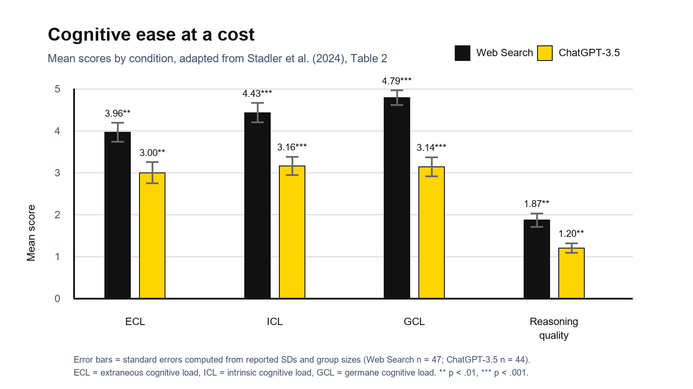

Study at a glance
Study overview
Randomized comparison
Students were randomly assigned to either a traditional web search condition or an LLM condition. The web search group used Google, while the LLM group used ChatGPT-3.5.
Socio-scientific inquiry
Participants researched whether nanoparticles in sunscreen should be recommended. They had to formulate a recommendation and justify it with scientific reasoning.
University students
The sample came from a German university. Students from medicine, pharmacy and biology were excluded to reduce the chance of strong prior knowledge about the topic.
Prior knowledge check
The authors checked whether the two groups differed in prior knowledge. No significant difference was found before the task.
What was measured?
Cognitive load
The study measured intrinsic, extraneous and germane cognitive load after the task. This shows how mentally demanding the information search felt for students.
Quality of reasoning
The recommendation justifications were evaluated for depth and quality. This is important because a fluent answer is not automatically a well-reasoned answer.
Perspective diversity
The researchers also examined whether ChatGPT made students' recommendations more homogeneous, meaning whether students converged on similar arguments.
Prior knowledge
Prior knowledge was measured so that differences in reasoning quality could be interpreted more fairly.
Main findings
ChatGPT felt easier
Students using ChatGPT-3.5 reported lower cognitive load than students using Google. The tool reduced the mental effort needed for information gathering.
Reasoning was weaker
The ChatGPT group produced lower-quality justifications. The easier path did not translate into deeper scientific reasoning.
No clear loss of diversity
The authors did not find significant differences in the homogeneity of recommendations and justifications. ChatGPT did not simply make everyone write the same thing.
Ease can hide shallow processing
The study suggests that reducing effort is not always educationally beneficial. Some cognitive effort may be necessary for deep engagement with complex material.
Visual summary of the results
The plot below shows the central trade-off in the study: students using ChatGPT-3.5 reported lower cognitive load, but their written justifications were also rated lower in reasoning quality.

Visual interpretation: ChatGPT-3.5 made the inquiry task feel easier, but the web search group produced better justifications.
What was done?
Why is this study relevant?
It challenges the simple idea that lower cognitive load is always good for learning.
The study is especially relevant for Human Factors because it shows a trade-off between usability and learning depth. ChatGPT made the task easier, but the final reasoning was weaker. This creates an important design question: how can AI systems support students without removing the productive struggle needed for learning?
Why is it special to me?
Learning with limited time
As a student with family responsibilities, I search and use tools that reduce mental effort. Due to limited time and attention, ChatGPT can be an intresting tool.
Support versus overreliance
The study is interesting to me because it does not argue AI is simply good or bad. It asks when cognitive support becomes too much support and starts replacing the deeper thinking students actually need for learning.
Why is it a good example?
Students did not just report opinions about ChatGPT. They used a specific technology, ChatGPT-3.5, for a specific scientific inquiry task. The result is also balanced: the tool helped with cognitive ease, but it weakened reasoning depth.
That makes the study a strong example for discussing the central question of AI in education: better user experience does not automatically mean better learning.
Connection to the meta-analysis
Deng et al. (2025) described in the meta-analysis that ChatGPT interventions often improve academic performance and reduce mental effort. The study of Stadler et al. (2024) adds an important point to this optimistic picture: reduced mental effort can come with lower reasoning depth when students use LLMs for scientific inquiry.
Relevant stakeholders
Students
Need guidance on when ChatGPT is useful and when it may shortcut deeper understanding.
Teachers
Need task designs that keep productive cognitive effort in the learning process.
Researchers
Need to distinguish between lower effort, better output and actual learning gains.
Universities
Need AI policies that focus on learning quality, not only plagiarism prevention.
Limitations and possible bias
- The sample was moderate in size and came from one university, so the findings are not be generalizeable.
- The task was short and a lab-based experiment. Longer field studies maybe show different results after a learning/introduction phase students learn better prompting and verification strategies.
- The study compared ChatGPT-3.5 with Google, but it did not test other AI tools.
- The topic was unfamiliar and socio-scientific. Effects might differ in domains where students have stronger prior knowledge.
- Technology bias: ChatGPT-3.5 was tested. Newer models could behave differently and could support scientific inquiry better.
- Task bias: The sunscreen/nanoparticle topic could be easier for students, who are comfortable with scientific uncertainty.
- Measurement bias: Reasoning depth was evaluated from written justifications. Students who write more fluently could show better reasonings.
- Novelty and expectation effects: It is possible that students interacted with ChatGPT differently because the tool was new or exciting.
Key takeaway
AI support should preserve productive thinking.
Stadler et al. (2024) shows that LLMs can reduce cognitive effort, but easier information access can also weaken the depth of students' reasoning. For education, the question is not whether students should use AI, but how AI can be designed and taught so that it supports critical engagement instead of replacing it.
Abbreviations
AI - artificial intelligence
CL - cognitive load
GPT - generative pre-trained transformer
LLM - large language model
Source
Stadler, M., Bannert, M., & Sailer, M. (2024). Cognitive ease at a cost: LLMs reduce mental effort but compromise depth in student scientific inquiry. Computers in Human Behavior, 160, 108386. https://doi.org/10.1016/j.chb.2024.108386